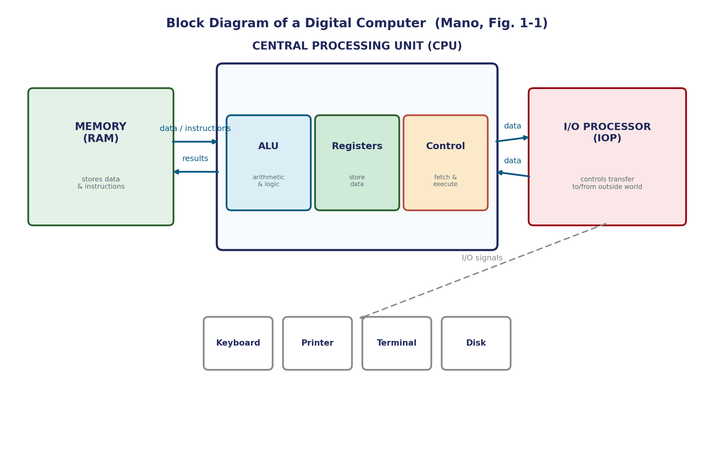

Block Diagram of a Digital Computer
The previous page mentioned that computer hardware is usually divided into three major parts. This page is that division, drawn out and explained.
The Three Major Hardware Parts
- Central Processing Unit (CPU) — contains an arithmetic and logic unit for manipulating data, a number of registers for storing data, and control circuits for fetching and executing instructions. All three of these live inside the CPU as one package.
- Memory — contains storage for instructions and data. It's called random-access memory (RAM) because the CPU can access any location in memory at random and retrieve the binary information within a fixed interval of time, regardless of which location it is.
- Input-Output Processor (IOP) — contains the electronic circuits for communicating and controlling the transfer of information between the computer and the outside world. The actual input and output devices — keyboards, printers, terminals, magnetic disk drives — connect to the computer through the IOP.

Inside the CPU
The CPU is where the actual "thinking" happens, and it has three distinct jobs bundled together:
- Arithmetic and Logic Unit (ALU) — manipulates data: the arithmetic and logic operations built up from the logic gates covered earlier in this unit.
- Registers — small, extremely fast storage locations inside the CPU itself, used for data currently being worked on.
- Control circuits — responsible for fetching instructions from memory and executing them, in the correct sequence.
Why "Random-Access" Memory?
The name isn't about the data being random — it's about the access pattern. The CPU can jump to any memory location directly, in the same fixed amount of time, regardless of which location it is or which location was accessed just before it. This is worth contrasting later with storage media that must be accessed sequentially (like older tape drives), where reaching a distant location takes longer than reaching a nearby one.
A Broader View: the Five-Unit Model
Beyond this textbook's own treatment, for additional clarity: many computer organization texts (including a separate, related textbook — Mano's Digital Design) present a more granular five-unit model — separating Input, Output, Memory, the Arithmetic/Logic Unit, and the Control Unit as five distinct top-level blocks, rather than bundling ALU/registers/control inside one CPU box and routing I/O through a dedicated processor. Both views describe the same underlying reality; the three-part IOP-centric model above is this course's assigned framing.
Common Pitfalls
- The ALU, registers, and control circuits are not three separate top-level units in this textbook's model — they are all sub-components packaged inside the CPU.
- "Random-access" describes access time, not randomness of content. Any memory location takes the same fixed time to reach, regardless of position.
- Input and output devices don't connect directly to the CPU in this model — they connect through the IOP, which handles the communication and transfer control.
Applications
- Every CPU architecture you'll encounter later in this course — from the Basic Computer model in Unit 3 to real modern processors — elaborates on this same three-part structure.
- Modern I/O controllers and DMA (Direct Memory Access) hardware are direct descendants of the IOP concept — dedicated circuitry that manages data transfer without tying up the CPU itself.
- RAM technology (DRAM, SRAM) in every device you own implements exactly this random-access guarantee — constant-time access regardless of address.
Summary
| Part | Contains / Role |
|---|---|
| CPU | ALU (computation) + Registers (fast storage) + Control circuits (fetch/execute) |
| Memory (RAM) | Storage for instructions and data; any location reachable in fixed time |
| I/O Processor (IOP) | Manages communication and transfer between the computer and external devices |